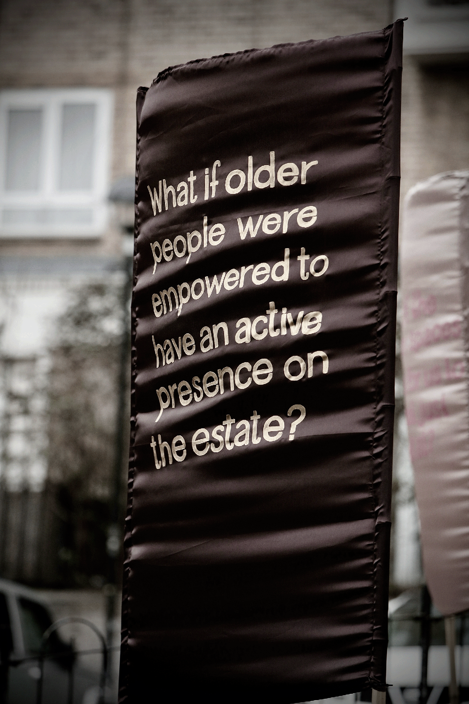

Dana Olărescu: The most inclusive place

Spending time on Hilgrove, a garden city estate, we were fascinated by how people share, move through and use the spaces on their estate. We were particularly interested in how residents understand their geographic relationships both each other and external connections. How for example are everyday conflicts mediated in space? How does design shape our use of space and who uses different spaces? What does it mean to share space and how do our homes and local areas connect to the world ‘beyond’. Building on our survey, participatory mapping workshop and ethnography of Hilgrove Estate, we worked with artist Dana Olărescu to explore what makes a space inclusive. Working in partnership with Counterpoints Arts, Dana began conversations, interviews, and workshops on the estate – often wearing a cape. As conversations around inclusive spaces with residents developed, Dana was influenced by residents’ desire to experience artwork that is joyful and “lifts the spirits”. Mentions of the 1977 Silver Jubilee being celebrated on the estate with bunting, children playing, and coronation chicken raised the question: what if Hilgrove Estate residents were celebrated with as much jubilation as the monarchy? Street wisdom walks and participatory arts workshops asked residents to imagine if they had control and power to make decisions on their estate? What would the ideal estate look like? What should Hilgrove look like in the future? Following these conversations, Dana made 1,500 bunting flags displaying the statement ‘What if…’, and used them to embellish the estate, inviting locals and passers-by to complete the question. Additionally, Dana made 22 hand-painted flags which were mounted on the public green and used ‘What if’ questions to interrogate the inclusivity of public space. These slogans aim to encourage everyone from residents to stakeholders to reimagine the area and become agents of change. How can local identity be preserved while adapting to new needs and challenges while welcoming and accepting all comers? The Most Inclusive Place attempts to create a space in which people are actively encouraged to engage with their immediate surroundings, ask uncomfortable questions, hold stakeholders to account, and help democratise access to local resources and initiatives. It is accompanied by a pocket publication that that was delivered to every resident on Hilgrove Estate and showcases residents’ creation of the installation and research conducted by the Open City team.
Our work
Publications
A collection of interdisciplinary academic publications spanning sociology, geography, urban studies, and architectural history resulting from this work
Reports and briefings
Delivered presentations with the aim of influencing policy, sharing our findings and provoking new ways of thinking about life in the city
Artistic collaborations
Work from three artist collaborations including film, installation, and a walking tour, co-produced across London
Project partnerships
We worked closely with local, Camden-based, and city-wide organisations and benefited from their expertise to guide our approach and share our findings
Image Gallery
A sampling of images from our wide-ranging work
Project team
Core project team